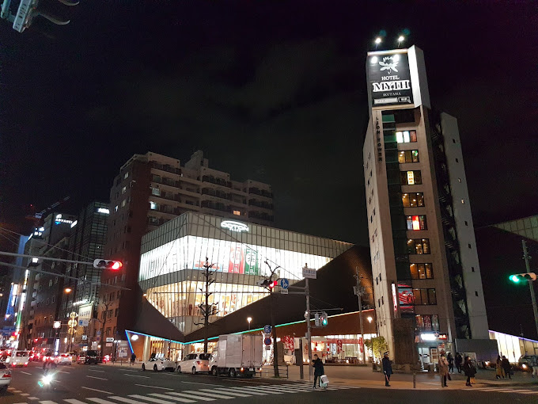

TOURIST SPOT
DOTONBORI
• Dōtonbori or Dōtombori is a district in Osaka, Japan.
• Known as one of Osaka's principal tourist and nightlife areas, the area runs along the Dōtonbori canal from Dōtonboribashi Bridge to Nipponbashi Bridge in the Namba district of the city's Chūō ward.
